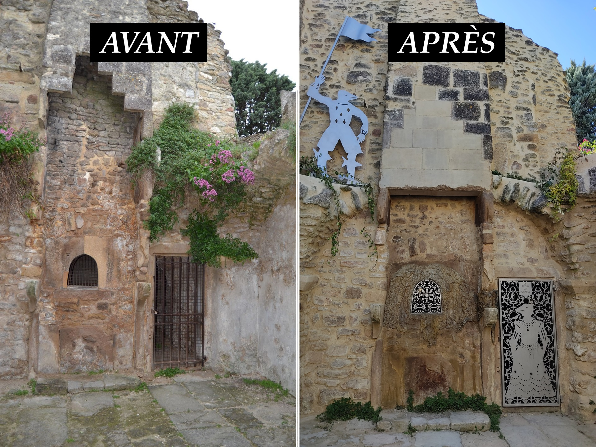

GRIGNAN · DRÔME · AFFAIRE DU PORTAIL
LE FOUR BANAL DE GRIGNAN
Une transformation controversée
En 2026, une commande publique de 200 000 € a été consacrée à la réalisation d’une installation artistique contemporaine au sein de l’ancien four banal de Grignan. Celle-ci a profondément transformé ce lieu médiéval et soulève de nombreuses questions relatives à la préservation du patrimoine, à l’utilisation de l’argent public et au respect du cadre juridique applicable.
Voici un dossier pour vous informer sur l'affaire du portail « satanique » et vous donner les moyens d'agir efficacement ! 😉
Cliquez sur la rubrique de votre choix : ╰┈➤ˎˊ˗
Cliquez sur la rubrique de votre choix : ╰┈➤ˎˊ˗
200 000 €
COMMANDE PUBLIQUE
XIVe siècle
ORIGINES DU FOUR BANAL
2026
TRANSFORMATION DU SITE

Le four banal avant et après sa transformation
Pourquoi ce site ?
Le patrimoine appartient à tous. Sa transformation, l’utilisation de l’argent public et le respect des règles qui le protègent méritent une information claire et accessible.
Ce dossier met les faits et les sources à disposition de chacun, pour que chacun puisse se forger une opinion et, s’il le souhaite, agir.